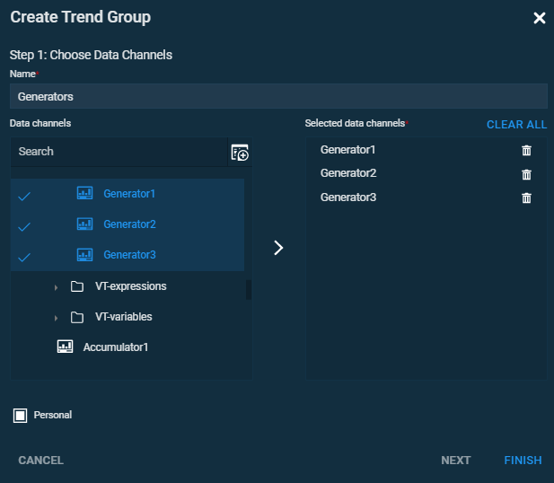
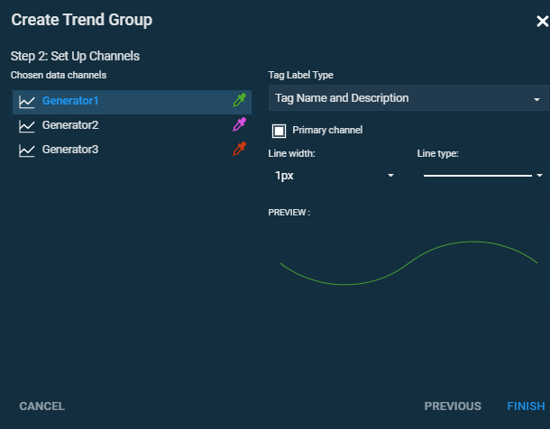
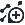

A trend group is a tool for visualisation of tag-related data. It allows to monitor tag values in real-time and to observe historical data. Complete the steps below to create a trend group.
Open the Trends section.
Click Edit to enter the editing mode, and then click Create Trend Group.
In the Create Trend Group, Step 1 dialog set name of the trend group, add data channels, then click Next.

Figure 1. Create Trend Group, Step 1
In the dialogue menu Create Trend Group, Step 2 configure trend's visualisation.

Figure 2. Create Trend Group, Step 2
Note
To create a trend group directly on the page, click the Create Trend Group button , choose necessary tags, set the group name in the menu on the left and click save.
Parent article:
Trends
General information about the Trends section.
 .
.